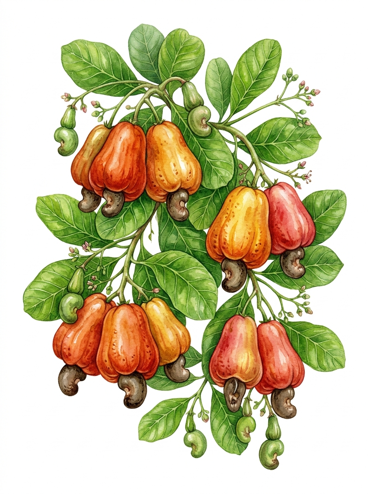

Susane Sales
&
Adilson Ferreira
"Deus mudou o teu caminho até se juntar ao meu, e guardou a tua vida,
separando-a para mim. Para onde fores, irei; onde quer que pousares,
ali pousarei. O teu povo será o meu povo, o teu Deus será o meu Deus."
Casamento · 2026
CONVIDAM PARA A CERIMÔNIA DE CELEBRAÇÃO
DO SEU CASAMENTO, A REALIZAR-SE NO DIA:
Data & Horário
Sábado
10 de outubro
2026
às 10h30
Cerimônia
Igreja Matriz Nossa Senhora
da Conceição
Praça Matriz, Centro
Conceição da Feira — BA
✦ Identidade do casamento ✦
“ Como o caju no verão,
nosso amor amadureceu
no tempo certo ”
O CAJU É UM SÍMBOLO DE
FERTILIDADE, CURA E PROSPERIDADE.
APÓS A CERIMÔNIA, OS NOIVOS RECEBERÃO
OS CONVIDADOS NA CHÁCARA DAS MARGARIDAS
Recepção
Rodovia BA-502, nº 82
São Gonçalo dos Campos — BA
Próximo ao Clube Águas Claras
Placas indicativas no caminho
Dicas & Orientações
Pedimos, com muito carinho, que confirmem sua presença com antecedência, para que possamos organizar cada detalhe da melhor maneira e garantir o conforto de todos durante a celebração.
Nossa cerimônia terá início pontualmente às 10h30. Para que todos possam se acomodar com tranquilidade e acompanhar esse momento desde o início, pedimos a gentileza de chegar por volta das 10h, evitando atrasos.
Traje: Esporte fino. Escolhemos um estilo elegante e confortável para que todos aproveitem esse dia tão especial.
Solicitamos gentilmente que não utilizem trajes nas cores branco, off-white, tons de azul e cinza, pois essas cores serão reservadas para os noivos e padrinhos, neste dia tão especial.
Tirem muitas fotos, divirtam-se, celebrem conosco e aproveitem cada momento desse dia tão especial! Sua presença fará parte de uma das lembranças mais bonitas da nossa história.
Este convite foi preparado com muito carinho e é destinado especialmente a você. Por isso, pedimos gentilmente que não levem acompanhantes (adultos ou crianças) que não tenham sido previamente convidados e confirmados, para que possamos manter a organização e o conforto de todos.
Sua presença é muito importante
Confirme sua presença até
10 de setembro de 2026
Você será redirecionado para o seu aplicativo de e-mail